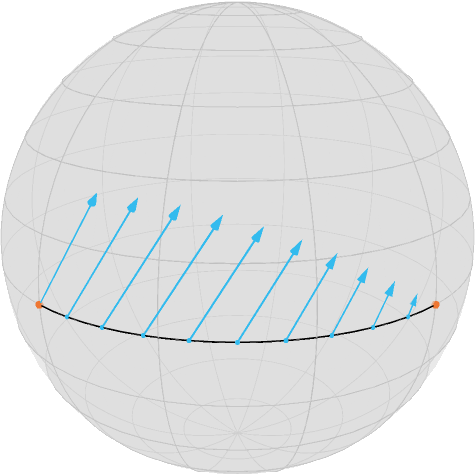

Illustration of Jacobi Fields
This tutorial illustrates the usage of Jacobi Fields within Manopt.jl. For this tutorial you should be familiar with the basic terminology on a manifold like the exponential and logarithmic map as well as shortest geodesics.
We first initialize the manifold
exportFolder = joinpath(
@__DIR__, "..", "..", "docs", "src", "assets", "images", "tutorials"
using Manopt, Manifoldsand we define some colors from Paul Tol
using Colors
black = RGBA{Float64}(colorant"#000000")
TolVibrantOrange = RGBA{Float64}(colorant"#EE7733")
TolVibrantCyan = RGBA{Float64}(colorant"#33BBEE")
TolVibrantTeal = RGBA{Float64}(colorant"#009988")Assume we have two points on the equator of the Sphere $\mathcal M = \mathbb S^2$
M = Sphere(2)
p, q = [[1.0, 0.0, 0.0], [0.0, 1.0, 0.0]]their connecting shortest geodesic (sampled at 100 points)
geodesicCurve = shortest_geodesic(M, p, q, [0:0.1:1.0...]);
nothing #hidelooks as follows using the asymptote_export_S2_signals export
asymptote_export_S2_signals("jacobiGeodesic.asy";
render = asyResolution,
curves=[geodesicCurve], points = [ [x,y] ],
colors=Dict(:curves => [black], :points => [TolVibrantOrange]),
dotSize = 3.5, lineWidth = 0.75, cameraPosition = (1.,1.,.5)
)
render_asymptote("jacobiGeodesic.asy"; render = 2)where $x$ is on the left. Then this tutorial solves the following task:
Given a direction $X_p∈ T_x\mathcal M$, for example
X = [0.0, 0.4, 0.5]3-element Array{Float64,1}:
0.0
0.4
0.5we move the start point $x$ into, how does any point on the geodesic move?
Or mathematically: Compute $D_p g(t; p,q)$ for some fixed $t∈[0,1]$ and a given direction $X_p$. Of course two cases are quite easy: For $t=0$ we are in $x$ and how $x$ “moves” is already known, so $D_x g(0;p,q) = X$. On the other side, for $t=1$, $g(1; p,q) = q$ which is fixed, so $D_p g(1; p,q)$ is the zero tangent vector (in $T_q\mathcal M$).
For all other cases we employ a jacobi_field, which is a (tangent) vector field along the shortest geodesic given as follows: The geodesic variation $\Gamma_{g,X}(s,t)$ is defined for some $\varepsilon > 0$ as
Intuitively we make a small step $s$ into direction $\xi$ using the geodesic $g(\cdot; p,X)$ and from $r=g(s; p,X)$ we follow (in $t$) the geodesic $g(\cdot; r,q)$. The corresponding Jacobi field~(J_{g,X}) along~(g(\cdot; p,q)) is given
which is an ODE and we know the boundary conditions $J_{g,X}(0)=X$ and $J_{g,X}(t) = 0$. In symmetric spaces we can compute the solution, since the system of ODEs decouples, see for example do Carmo, Chapter 4.2. Within Manopt.jl this is implemented as jacobi_field(M,p,q,t,X[,β]), where the optional parameter (function) β specifies, which Jacobi field we want to evaluate and the one used here is the default.
We can hence evaluate that on the points on the geodesic at
T = [0:0.1:1.0...]namely
r = shortest_geodesic(M, p, q, T)
nothing #hidethe geodesic moves as
W = jacobi_field.(Ref(M), Ref(p), Ref(q), T, Ref(X))which can also be called using differential_geodesic_startpoint. We can add to the image above by creating extended tangent vectors the include their base points
V = [Tuple([a, b]) for (a, b) in zip(r, W)]and add that as one further set to the Asymptote export.
asymptote_export_S2_signals("jacobiGeodesicdifferential_geodesic_startpoint.asy";
render = asyResolution,
curves=[geodesicCurve], points = [ [x,y], Z], tVectors = [Vx],
colors=Dict(
:curves => [black],
:points => [TolVibrantOrange,TolVibrantCyan],
:tvectors => [TolVibrantCyan]
),
dotSizes = [3.5,2.], lineWidth = 0.75, cameraPosition = (1.,1.,.5)
)
render_asymptote("jacobiGeodesicdifferential_geodesic_startpoint.asy"; render = 2)
If we further move the end point, too, we can derive that Differential in direction
Xq = [0.2, 0.0, -0.5]
W2 = differential_geodesic_endpoint.(Ref(M), Ref(p), Ref(q), T, Ref(Xq))
V2 = [Tuple([a, b]) for (a, b) in zip(r, W2)]and we can combine both keeping the base point
V3 = [Tuple([a, b]) for (a, b) in zip(r, W2 + W)]asymptote_export_S2_signals("jacobiGeodesicResult.asy";
render = asyResolution,
curves=[geodesicCurve], points = [ [x,y], Z], tVectors = [Vx,Vy,Vb],
colors=Dict(
:curves => [black],
:points => [TolVibrantOrange,TolVibrantCyan],
:tvectors => [TolVibrantCyan,TolVibrantCyan,TolVibrantTeal]
),
dotSizes = [3.5,2.], lineWidth = 0.75, cameraPosition = (1.,1.,0.)
)
render_asymptote("jacobiGeodesicResult.asy"; render = 2)Literature
- [doCarmo1992] do Carmo, M. P.:
Riemannian Geometry , Mathematics: Theory & Applications, Birkhäuser Basel, 1992, ISBN: 0-8176-3490-8 - [BergmannGousenbourger2018]
Bergmann, R.; Gousenbourger, P.-Y.:
A variational model for data fitting on manifolds by minimizing the acceleration of a Bézier curve , Frontiers in Applied Mathematics and Statistics, 2018. doi: 10.3389/fams.2018.00059